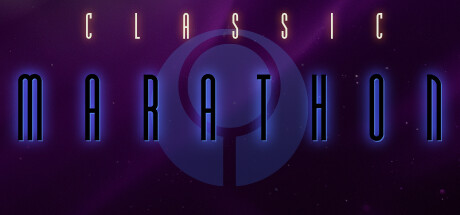

UESCTerm 802.11 (remote override) |
7777 08.25.2337 |

Frog blast the vent core!
<-- Back
***INCOMING MESSAGE FROM CLAIRE***
That's right, gamers, it's time for more Marathon news.
I never would've thought that this franchise would get a big resurgence in the 2020s, but here we are.
This time, Marathon is finally making its way to Steam, under the name Classic Marathon. Only the first game so far, but surely Durandal and Infinity will be quick to follow, unless the devs decide to do the same thing Bungie did back in the day when bringing Marathon Durandal to Xbox 360 - that is, only port one game in the trilogy and never touch the others.
Speaking of the devs, who are they? Not Bungie? Of course not. It's the Aleph One team, because this game is just the already freely available Aleph One port, but now on Steam! Which is perfectly fine. Aleph One has been the best way to play these games for like 20 years now, unless you're a freak like me who doesn't care about modern conveniences and is committed to playing these titles on 90s PowerPC Macs.
Now you nerds have even less of an excuse not to play Marathon. You don't even have to go on the website! It's on Steam now!! Play Marathon!!!
Anyway, yeah I'm excited. Hopefully this leads to a solid population increase and introduces lots more people to one of the best video game trilogies and sci-fi stories I've ever experienced.
Don’t forget, somewhere in the heavens… they are waiting.
Steam Page
***JUMP PAD ACTIVATION INITIATION START***
***TRANSPORT WHEN READY***
|
PgUp/PgDn/Arrows to Scroll |
Return/Enter to Acknowledge |
|